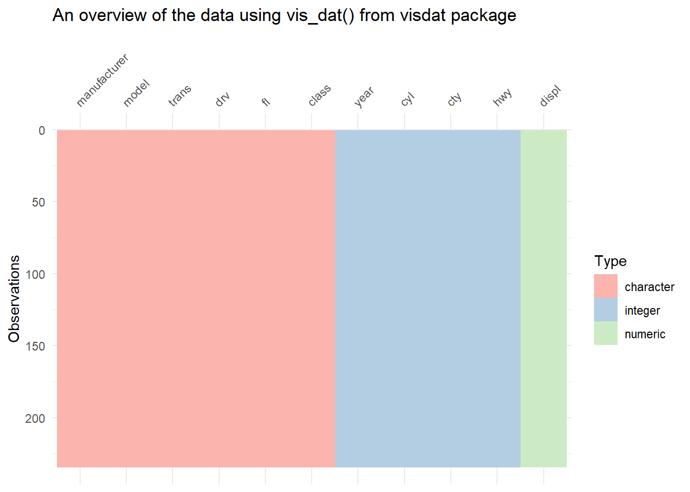
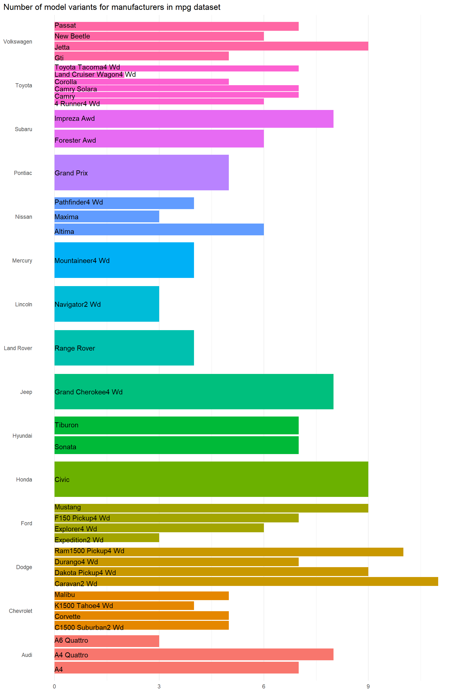
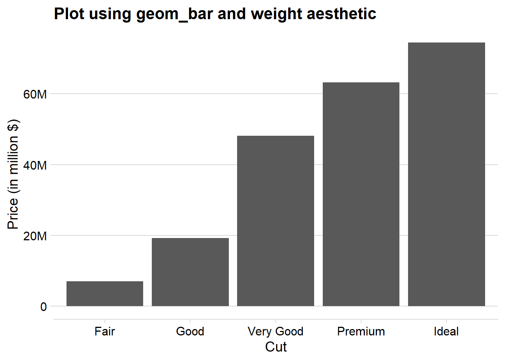

Chapter 2
First Steps
Solutions for this chapter are under construction.
2.2.1 Exercises
Question 1
List five functions that you could use to get more information about the mpg dataset.
Here are the five functions for exploring the mpg dataset from the ggplot2 package in R, along with example code: –
-
Use
str(mpg)to display the structure of the datasetmpgtelling what is the class of each variable.Code
str(mpg)tibble [234 × 11] (S3: tbl_df/tbl/data.frame) $ manufacturer: chr [1:234] "audi" "audi" "audi" "audi" ... $ model : chr [1:234] "a4" "a4" "a4" "a4" ... $ displ : num [1:234] 1.8 1.8 2 2 2.8 2.8 3.1 1.8 1.8 2 ... $ year : int [1:234] 1999 1999 2008 2008 1999 1999 2008 1999 1999 2008 ... $ cyl : int [1:234] 4 4 4 4 6 6 6 4 4 4 ... $ trans : chr [1:234] "auto(l5)" "manual(m5)" "manual(m6)" "auto(av)" ... $ drv : chr [1:234] "f" "f" "f" "f" ... $ cty : int [1:234] 18 21 20 21 16 18 18 18 16 20 ... $ hwy : int [1:234] 29 29 31 30 26 26 27 26 25 28 ... $ fl : chr [1:234] "p" "p" "p" "p" ... $ class : chr [1:234] "compact" "compact" "compact" "compact" ... -
Employ
glimpse(mpg)to obtain a concise overview of the dataset’s structure and its first few rows, offering a detailed glimpse of the data. It is similar to the previous functionstr()Code
glimpse(mpg)Rows: 234 Columns: 11 $ manufacturer <chr> "audi", "audi", "audi", "audi", "audi", "audi", "audi", "… $ model <chr> "a4", "a4", "a4", "a4", "a4", "a4", "a4", "a4 quattro", "… $ displ <dbl> 1.8, 1.8, 2.0, 2.0, 2.8, 2.8, 3.1, 1.8, 1.8, 2.0, 2.0, 2.… $ year <int> 1999, 1999, 2008, 2008, 1999, 1999, 2008, 1999, 1999, 200… $ cyl <int> 4, 4, 4, 4, 6, 6, 6, 4, 4, 4, 4, 6, 6, 6, 6, 6, 6, 8, 8, … $ trans <chr> "auto(l5)", "manual(m5)", "manual(m6)", "auto(av)", "auto… $ drv <chr> "f", "f", "f", "f", "f", "f", "f", "4", "4", "4", "4", "4… $ cty <int> 18, 21, 20, 21, 16, 18, 18, 18, 16, 20, 19, 15, 17, 17, 1… $ hwy <int> 29, 29, 31, 30, 26, 26, 27, 26, 25, 28, 27, 25, 25, 25, 2… $ fl <chr> "p", "p", "p", "p", "p", "p", "p", "p", "p", "p", "p", "p… $ class <chr> "compact", "compact", "compact", "compact", "compact", "c… -
Run
summary(mpg)to generate a statistical summary of the variables within thempgdataset, providing measures like mean, median, and quartiles.Code
summary(mpg)manufacturer model displ year Length:234 Length:234 Min. :1.600 Min. :1999 Class :character Class :character 1st Qu.:2.400 1st Qu.:1999 Mode :character Mode :character Median :3.300 Median :2004 Mean :3.472 Mean :2004 3rd Qu.:4.600 3rd Qu.:2008 Max. :7.000 Max. :2008 cyl trans drv cty Min. :4.000 Length:234 Length:234 Min. : 9.00 1st Qu.:4.000 Class :character Class :character 1st Qu.:14.00 Median :6.000 Mode :character Mode :character Median :17.00 Mean :5.889 Mean :16.86 3rd Qu.:8.000 3rd Qu.:19.00 Max. :8.000 Max. :35.00 hwy fl class Min. :12.00 Length:234 Length:234 1st Qu.:18.00 Class :character Class :character Median :24.00 Mode :character Mode :character Mean :23.44 3rd Qu.:27.00 Max. :44.00 -
Utilize
dfSummary(mpg)from thesummarytoolspackage to obtain a comprehensive summary report with various statistics and visualizations for thempgdataset.Code
library(summarytools) st_options(plain.ascii = FALSE) print( summarytools::dfSummary(mpg, plain.ascii = FALSE, headings = FALSE, display.labels = FALSE, silent = TRUE), method = "render")No Variable Stats / Values Freqs (% of Valid) Graph Valid Missing 1 manufacturer [character] 1. dodge 2. toyota 3. volkswagen 4. ford 5. chevrolet 6. audi 7. hyundai 8. subaru 9. nissan 10. honda [ 5 others ] 37 ( 15.8% ) 34 ( 14.5% ) 27 ( 11.5% ) 25 ( 10.7% ) 19 ( 8.1% ) 18 ( 7.7% ) 14 ( 6.0% ) 14 ( 6.0% ) 13 ( 5.6% ) 9 ( 3.8% ) 24 ( 10.3% ) 
234 (100.0%) 0 (0.0%) 2 model [character] 1. caravan 2wd 2. ram 1500 pickup 4wd 3. civic 4. dakota pickup 4wd 5. jetta 6. mustang 7. a4 quattro 8. grand cherokee 4wd 9. impreza awd 10. a4 [ 28 others ] 11 ( 4.7% ) 10 ( 4.3% ) 9 ( 3.8% ) 9 ( 3.8% ) 9 ( 3.8% ) 9 ( 3.8% ) 8 ( 3.4% ) 8 ( 3.4% ) 8 ( 3.4% ) 7 ( 3.0% ) 146 ( 62.4% ) 
234 (100.0%) 0 (0.0%) 3 displ [numeric] Mean (sd) : 3.5 (1.3) min ≤ med ≤ max: 1.6 ≤ 3.3 ≤ 7 IQR (CV) : 2.2 (0.4) 35 distinct values 
234 (100.0%) 0 (0.0%) 4 year [integer] Min : 1999 Mean : 2003.5 Max : 2008 1999 : 117 ( 50.0% ) 2008 : 117 ( 50.0% ) 
234 (100.0%) 0 (0.0%) 5 cyl [integer] Mean (sd) : 5.9 (1.6) min ≤ med ≤ max: 4 ≤ 6 ≤ 8 IQR (CV) : 4 (0.3) 4 : 81 ( 34.6% ) 5 : 4 ( 1.7% ) 6 : 79 ( 33.8% ) 8 : 70 ( 29.9% ) 
234 (100.0%) 0 (0.0%) 6 trans [character] 1. auto(av) 2. auto(l3) 3. auto(l4) 4. auto(l5) 5. auto(l6) 6. auto(s4) 7. auto(s5) 8. auto(s6) 9. manual(m5) 10. manual(m6) 5 ( 2.1% ) 2 ( 0.9% ) 83 ( 35.5% ) 39 ( 16.7% ) 6 ( 2.6% ) 3 ( 1.3% ) 3 ( 1.3% ) 16 ( 6.8% ) 58 ( 24.8% ) 19 ( 8.1% ) 
234 (100.0%) 0 (0.0%) 7 drv [character] 1. 4 2. f 3. r 103 ( 44.0% ) 106 ( 45.3% ) 25 ( 10.7% ) 
234 (100.0%) 0 (0.0%) 8 cty [integer] Mean (sd) : 16.9 (4.3) min ≤ med ≤ max: 9 ≤ 17 ≤ 35 IQR (CV) : 5 (0.3) 21 distinct values 
234 (100.0%) 0 (0.0%) 9 hwy [integer] Mean (sd) : 23.4 (6) min ≤ med ≤ max: 12 ≤ 24 ≤ 44 IQR (CV) : 9 (0.3) 27 distinct values 
234 (100.0%) 0 (0.0%) 10 fl [character] 1. c 2. d 3. e 4. p 5. r 1 ( 0.4% ) 5 ( 2.1% ) 8 ( 3.4% ) 52 ( 22.2% ) 168 ( 71.8% ) 
234 (100.0%) 0 (0.0%) 11 class [character] 1. 2seater 2. compact 3. midsize 4. minivan 5. pickup 6. subcompact 7. suv 5 ( 2.1% ) 47 ( 20.1% ) 41 ( 17.5% ) 11 ( 4.7% ) 33 ( 14.1% ) 35 ( 15.0% ) 62 ( 26.5% ) 
234 (100.0%) 0 (0.0%) Generated by summarytools 1.0.1 (R version 4.3.1)
2023-10-23 -
Enhance data exploration with
vis_dat(mpg)from thevisdatpackage, which offers interactive visualizations to better understand the data-set’s contents and identify missing values.Code
library(visdat) visdat::vis_dat(mpg) + scale_fill_brewer(palette = "Pastel1") + labs(title = "An overview of the data using vis_dat() from visdat package")
Question 2
How can you find out what other datasets are included with ggplot2?
To find out what datasets are included with the ggplot2 package, you can use the data() function. You can use the data() function to list all the datasets available in the ggplot2 package.
Code
data(package = "ggplot2")Question 3
Apart from the US, most countries use fuel consumption (fuel consumed over fixed distance) rather than fuel economy (distance travelled with fixed amount of fuel). How could you convert cty and hwy into the European standard of l/100km?
In the R formula, we convert miles per gallon (mpg) to liters per 100 kilometers (L/100km). The conversion factor, 235.21, is used to perform the conversion. To convert mpg to L/100km, we divide the conversion factor by the mpg value.
\[ \text{L/100km} = \frac{235.21}{\text{mpg}} \tag{1}\] The conversion factor of 235.21 is derived from the following logic:
- 1 mile is equal to approximately 1.609 kilometers.
- 1 gallon is equal to approximately 3.785 liters.
To convert from miles per gallon (mpg) to liters per 100 kilometers (L/100km), we need to reverse the units. So, we divide the number of miles (1 mile) by the number of gallons (1 gallon) to get the number of kilometers per liter. This can be expressed as:
\[ \text{Kilometers per Liter} = \frac{1 \text{ mile}}{1 \text{ gallon}} \times \frac{1.609 \text{ kilometers}}{1 \text{ mile}} \times \frac{1 \text{ liter}}{3.785 \text{ gallons}} \approx 0.4251 \text{ kilometers per liter} \tag{2}\]
Now, to express fuel efficiency in liters per 100 kilometers, we need to scale up by 100:
\[ \text{L/100km} = \frac{1}{0.4251} \times 100 \approx 235.21 \text{ L/100km per 1 kilometer per liter} \tag{3}\]
So, when you divide 235.21 by miles per gallon (mpg), you are effectively converting from miles per gallon to liters per 100 kilometers, accounting for the differences in units and scaling by 100 to express the consumption over a distance of 100 kilometers.
Now, you can include the R code and LaTeX explanation in an R Markdown document for a more structured presentation. When you knit the R Markdown document, it will generate a formatted document with both the code and explanations.
Code
# Conversion factor from mpg to L/100km
conversion_factor <- 235.21
mpg |>
mutate(
cty = conversion_factor/cty,
hwy = conversion_factor/hwy
) |>
slice_head(n = 5) |>
gt() |> gtExtras::gt_theme_538() |>
fmt_number(columns = cty:hwy,
decimals = 2)| manufacturer | model | displ | year | cyl | trans | drv | cty | hwy | fl | class |
|---|---|---|---|---|---|---|---|---|---|---|
| audi | a4 | 1.8 | 1999 | 4 | auto(l5) | f | 13.07 | 8.11 | p | compact |
| audi | a4 | 1.8 | 1999 | 4 | manual(m5) | f | 11.20 | 8.11 | p | compact |
| audi | a4 | 2.0 | 2008 | 4 | manual(m6) | f | 11.76 | 7.59 | p | compact |
| audi | a4 | 2.0 | 2008 | 4 | auto(av) | f | 11.20 | 7.84 | p | compact |
| audi | a4 | 2.8 | 1999 | 6 | auto(l5) | f | 14.70 | 9.05 | p | compact |
Question 4
Which manufacturer has the most models in this dataset? Which model has the most variations? Does your answer change if you remove the redundant specification of drive train (e.g. “pathfinder 4wd”, “a4 quattro”) from the model name?
As we can see below in Table 2, Toyota has the most models in the data-set.
Code
# Group 'mpg' data by 'manufacturer.'
mpg |>
group_by(manufacturer) |>
# Count distinct 'model' values for each manufacturer.
summarize(models = n_distinct(model)) |>
# Sort in descending order based on 'n_models.'
arrange(desc(models)) |>
# Select the top 5 manufacturers.
slice_head(n = 5) |>
# Create a table and apply a specific theme to it.
gt() |> gt_theme_538()| manufacturer | models |
|---|---|
| toyota | 6 |
| chevrolet | 4 |
| dodge | 4 |
| ford | 4 |
| volkswagen | 4 |
And, as we can see in the Table 3 below, the Dodge Caravan (2 wheel drive) model has the most variations, i.e., 11 in number.
Code
mpg |>
count(manufacturer, model, sort = TRUE) |>
slice_head(n = 5) |>
rename(variations = n) |>
gt() |> gt_theme_538()| manufacturer | model | variations |
|---|---|---|
| dodge | caravan 2wd | 11 |
| dodge | ram 1500 pickup 4wd | 10 |
| dodge | dakota pickup 4wd | 9 |
| ford | mustang | 9 |
| honda | civic | 9 |
2.3.1 Exercises
Question 1
How would you describe the relationship between cty and hwy? Do you have any concerns about drawing conclusions from that plot?
There is a positive correlation between cty and hwy , as shown in Figure 1. However, one concern we have is whether this correlation is causative in nature, or is it a direct correlation, or is it caused by a third unknown variable, i.e. confounding.
Confounding is a distortion of the association between independent and dependent variables. It occurs when a third variable is independently associated with both. This can happen when the primary exposure of interest is mixed up with some other factor that is associated with the outcome.
For example, perhaps it is the engine displacement that determines both city and highway mileage, and both have a common link, rather than a direct association.
Note: I am using theme_ipsum() from the hrbrthemes package (Rudis 2020).
Code
mpg |>
ggplot(aes(x = cty, y = hwy)) +
geom_point() +
labs(x = "City mileage (cty)",
y = "Highway mileage (hwy)",
title = "Scatter-plot: hwy vs. cty",
caption = "Data-set: mpg from ggplot2") +
hrbrthemes::theme_ipsum()Question 2
What does ggplot(mpg, aes(model, manufacturer)) + geom_point() show? Is it useful? How could you modify the data to make it more informative?
The code ggplot(mpg, aes(model, manufacturer)) + geom_point() is used to create a scatter plot, where the mpg dataset is being used, and it’s mapping the model variable to the x-axis and the manufacturer variable to the y-axis. The geom_point() function is responsible for adding points to the plot.
Code
ggplot(mpg, aes(model, manufacturer)) + geom_point()
Here’s a detailed explanation of why this code and its resulting Figure 2 isn’t useful:
-
Data Mapping:
-
modelis mapped to the x-axis: The car models don’t have a specific order, i.e. it is a categorical variable, not an ordinal or continuous variable. -
manufactureris mapped to the y-axis: Again, manufacturer is a categorical variable with no specific order. Thus, representing it on y-axis is not advisable.
-
-
Visualization:
- The plot will consist of multiple points where each point represents a combination of a car model and its manufacturer. As, we can expect, each observation will have a unique model. There is no specific information or pattern being displayed as scatter plot doesn’t connect the points.
- The plot suffers from over-plotting if there are many data points when a single model has many variants (
alphaaesthetic has not been defined here). Further, since each unique model and manufacturer combination will be displayed as a separate point, it is difficult to discern patterns or relationships. - Thus, this plot has very limited usefulness is identifying trends or make specific insights.
Modifications for More Informativeness: To make the plot more informative, you can consider the following modifications:
-
Changing the plot geom: If our purpose is to show the number of model variants for each manufacturer, we might shift to a bar plot, with faceting on the manufacturer as shown in Figure 3 .
Code
mpg |> # Counting number of variants for each model count(manufacturer, model) |> # Nicer looking names mutate(manufacturer = snakecase::to_title_case(manufacturer), model = snakecase::to_title_case(model, numerals = "left")) |> # Plot ggplot(aes(x = n, y = manufacturer, group = model, fill = manufacturer)) + # Grouped bar chart geom_bar(position = "dodge2", stat = "identity") + # Adding names of models geom_text(aes(label = model, x = 0), position = position_dodge2(width = 1), hjust = "left") + theme_minimal() + theme(panel.grid.major.y = element_blank(), legend.position = "none", plot.title.position = "plot") + labs(y = NULL, x = NULL, title = "Number of model variants for manufacturers in mpg dataset")
Figure 3: Grouped horizontal bar plot showing number of variants for different car models in mpg dataset -
Labels, Title, Color and Size Aesthetics: If we insist on using the same plot as given in the question, we can use additional aesthetics like color or point size to encode more information. For instance, you could use color to represent a third variable, such as “class” (economy, midsize, compact, etc.), and point size to represent another variable, like “displacement.” We can further sort the manufacturers and models alphabetically.
Code
# Create some factors to order the manufacturers and model names in a specific order man_lev <- mpg |> distinct(manufacturer) |> pull(manufacturer) mod_lev <- mpg |> group_by(manufacturer) |> arrange(manufacturer, model) |> pull(model) |> unique() # Start the plot mpg |> # reorder the manufacturers by alphabetically and models by numbers mutate( manufacturer = fct(manufacturer, levels = man_lev), model = fct(model, levels = mod_lev) ) |> # Create the same scatter plot, adding size and color aesthetic ggplot(aes(x = model, y = manufacturer, size = displ, col = manufacturer)) + # A geom_jitter instead of geom_point to avoid overlap of variants of a model geom_jitter(alpha = 0.3, width = 0, height = 1) + # Plot beautification and customization labs(x = NULL, y = NULL) + theme_minimal() + theme(legend.position = "none", panel.grid.minor.x = element_blank(), panel.grid.major.x = element_blank(), axis.text.x = element_text(angle = 90, hjust = 1, vjust = 0.5))Figure 4: Adding other informative aesthetics to the points in given plot
These modifications can help you gain more insight from your data and make your visualization more informative. The choice of modifications should depend on the specific questions you want to answer and the nature of your dataset.
Question 3
Describe the data, aesthetic mappings and layers used for each of the following plots. You’ll need to guess a little because you haven’t seen all the datasets and functions yet, but use your common sense! See if you can predict what the plot will look like before running the code.
ggplot(mpg, aes(cty, hwy)) + geom_point()ggplot(diamonds, aes(carat, price)) + geom_point()ggplot(economics, aes(date, unemploy)) + geom_line()ggplot(mpg, aes(cty)) + geom_histogram()
Let’s break down each of the provided ggplot2 code snippets and describe the data, aesthetic mappings, and layers used for the plots:
-
ggplot(mpg, aes(cty, hwy)) + geom_point()- Data: The data for this plot comes from the ‘mpg’ dataset, which is typically included in the ggplot2 package. This dataset contains information about the fuel efficiency of various car models.
- Aesthetic Mappings: It uses aesthetic mappings to represent the ‘cty’ (city miles per gallon) variable on the x-axis and the ‘hwy’ (highway miles per gallon) variable on the y-axis.
-
Layers: This plot consists of a single layer represented by
geom_point(), which adds points to the plot, creating a scatter plot of ‘cty’ against ‘hwy’.
-
ggplot(diamonds, aes(carat, price)) + geom_point()-
Data: The data for this plot comes from the ‘
diamonds’ dataset, another built-in dataset inggplot2, containing information about diamonds, including their carat weight and price. -
Aesthetic Mappings: It uses aesthetic mappings to represent the ‘
carat’ variable on the x-axis and the ‘price’ variable on the y-axis. -
Layers: This plot also consists of a single layer represented by
geom_point(), which adds points to the plot, creating a scatter plot of diamond carat weight against their prices.
-
Data: The data for this plot comes from the ‘
-
ggplot(economics, aes(date, unemploy)) + geom_line()-
Data: The data for this plot comes from the ‘economics’ dataset, which is included in the ggplot2 package. This dataset contains economic data, including the ‘
date’ and ‘unemploy’ (number of unemployed individuals) variables. -
Aesthetic Mappings: It uses aesthetic mappings to represent the ‘
date’ variable on the x-axis and the ‘unemploy’ variable on the y-axis. -
Layers: This plot consists of a single layer represented by
geom_line(), which connects points with lines, creating a time series line plot of the number of unemployed individuals over time.
-
Data: The data for this plot comes from the ‘economics’ dataset, which is included in the ggplot2 package. This dataset contains economic data, including the ‘
-
ggplot(mpg, aes(cty)) + geom_histogram()-
Data: The data for this plot also comes from the ‘
mpg’ dataset. -
Aesthetic Mappings: It uses an aesthetic mapping to represent only the ‘
cty’ variable, which will be plotted on the x-axis. Since it’s a histogram, the y-axis represents the count of observations in each bin. -
Layers: This plot consists of a single layer represented by
geom_histogram(), which creates a histogram of thectyvariable, showing the distribution of city miles per gallon in the dataset.
-
Data: The data for this plot also comes from the ‘
Each of these plots uses different datasets and aesthetic mappings, and they employ different types of geoms (layers) to represent the data in various ways, such as scatter plots, line plots, and histograms, depending on the specific data and the analysis or visualization goals.
2.4.1 Exercises
Question 1
Experiment with the colour, shape and size aesthetics. What happens when you map them to continuous values? What about categorical values? What happens when you use more than one aesthetic in a plot?
We can experiment with the colour, shape, and size aesthetics using both continuous and categorical variables in the mpg dataset. Figure 5 shows six separate scatter plots using different combinations of colour, shape, and size aesthetics, with both continuous and categorical variables: –
Code
# Create a ggplot2 plot with 'mpg' dataset
p <- ggplot(mpg, aes(x = cty, y = hwy)) + theme_minimal()
# Continuous variable with color, shape, and size aesthetics
p + geom_point(aes(color = displ))
p + geom_text(aes(x = 20, y = 30),
label = "Error: Shape aesthetic does not \nwork with a continuous variable")
p + geom_point(aes(size = displ), alpha = 0.2)
# Categorical variable with color, shape, and size aesthetics
p + geom_point(aes(color = factor(class)))
p + geom_point(aes(shape = factor(class)))
p + geom_point(aes(size = factor(class)), alpha = 0.2)
Insights:
sizeaesthetic works well with continuous variable (or, at worse, an ordinal variable). It should not be used with categorical variable.shapeaesthetic works only with categorical variable. It simply does not work with a continuous variable.colorworks well with categorical and continuous variables.
When you use more than one aesthetic in a plot, you can create a plot that contains multiple layers of information, with each aesthetic conveying a different aspect of the data. While this can provide a rich and detailed representation of your data, it can also lead to a plot that becomes too complex and difficult to perceive for several reasons:
Clutter: Multiple aesthetics, such as color, shape, size, and others, can lead to visual clutter, especially when you have a large dataset. This can make it challenging for viewers to discern patterns and relationships within the data.
Cognitive Overload: When a plot contains too many aesthetics, viewers may struggle to process the information efficiently. It requires more cognitive effort to interpret the various aesthetic mappings, leading to information overload.
Reduced Clarity: Complex plots can reduce the clarity and simplicity that is often desirable in data visualization. Clutter and complexity can obscure the main message you want to convey, making it harder for the audience to understand the key insights.
Color Confusion: Overusing color can be particularly problematic. If multiple categories or variables are assigned distinct colors, it can be challenging to differentiate between them, especially if some colors are similar or hard to distinguish.
Interference: When multiple aesthetics are used, there’s a potential for interference or overlap between different visual elements. For example, if you use both color and size aesthetics, larger points with different colors may overlap, making it challenging to discern individual points.
Ineffectiveness: Sometimes, adding multiple aesthetics may not actually enhance the plot’s effectiveness or communicative power. Instead, it might complicate the plot without providing significant additional insights.
To avoid making a plot too complex and difficult to perceive, it’s essential to carefully consider the goals of your visualization and the message you want to convey. It’s often better to use a limited number of aesthetics thoughtfully, or using faceting.
Question 2
What happens if you map a continuous variable to shape? Why? What happens if you map trans to shape? Why?
Mapping a continuous variable to the shape aesthetic in ggplot2, it throws up an error, because, the shape aesthetic is designed for categorical variables, not continuous ones. When you attempt to deliberately map a continuous variable to shape, ggplot2 will, at best, treat it as a categorical variable, which can lead to unintended and potentially confusing results.
Let’s consider both scenarios using the mpg dataset:
-
Mapping a Continuous Variable (e.g.,
displ) to Shape Aesthetic:ggplot(mpg, aes(x = cty, y = hwy, shape = displ)) + geom_point() # Error in `geom_point()`: # ! Problem while computing aesthetics. # ℹ Error occurred in the 1st layer. # Caused by error in `scale_f()`: # ! A continuous variable cannot be mapped to the shape aesthetic # ℹ choose a different aesthetic or use `scale_shape_binned()` # Run `rlang::last_trace()` to see where the error occurred.When you map a continuous variable like
displ(engine displacement) to theshapeaesthetic, ggplot2 will treat each unique value of ‘displ’ as a separate category and assign a different shape to each value. This can result in a plot with many unique shapes, which can be difficult to interpret. Thus,ggplot2throws up an error. The shapes do not have any inherent order or meaning in this context, so the plot may not provide clear insights. -
Mapping a Categorical Variable (e.g.,
trans) to Shape:Code
ggplot(mpg, aes(x = cty, y = hwy, shape = trans)) + geom_point()Figure 6: Mapping a Categorical Variable: Transmission (trans) to Shape aesthetic When you map a categorical variable like ‘trans’ (transmission type) to the
shapeaesthetic, ggplot2 assigns a unique shape to each category in the ‘trans’ variable. However, there are a limited number of shapes inggplot2and thus many shapes (likeauto(s5),auto(s6),manual(m5)andmanual(m6)) go un-plotted thus leading to missing data. In any case, it is generally not advisable to plot more than 4-5 shapes in a plot to keep it nice and simple.
In summary, mapping a continuous variable to the shape aesthetic may not be possible. However, mapping a categorical variable to shape can be useful, provided the number of categories is not too much.
Question 3
How is drive train related to fuel economy? How is drive train related to engine size and class?
To understand the relationship between drive train, fuel economy, engine size, and class in the mpg dataset, you can create a series of plots. We’ll use scatter plots and bar plots to visualize these relationships: –
-
Investigating how drive train (variable ‘
drv’) is related to fuel economy (variables ‘cty’ and ‘hwy’): In the figure below, we find that vehicles with “Front-Wheel” drive-train are more fuel efficient, as compared to rear and 4-wheel drive train: –Code
ggplot(mpg, aes(x = drv, y = cty, fill = drv)) + geom_boxplot() + labs(title = "City MPG by Drive Train Type", x = "Drive Train", y = "City MPG") + theme_minimal() ggplot(mpg, aes(x = drv, y = hwy, fill = drv)) + geom_boxplot() + labs(title = "Highway MPG by Drive Train Type", x = "Drive Train", y = "Highway MPG") + theme_minimal() -
Investigating how drive train is related to engine size (variable ‘
displ’) and vehicle class (variable ‘class’): In the figure below, we observe that front-wheel drive vehicles have smallest engines, while rear-wheel drive vehicles have largest engines. This also partly explains the fuel economy of these vehicle classes. Further, we observe that front-wheel drive cars are 2-seaters, sub-compact or compact class. However, SUVs dominate the 4-wheel drive and rear-wheel drive cars.Code
ggplot(mpg, aes(x = drv, y = displ, fill = drv)) + geom_boxplot() + labs(title = "Engine Size by Drive Train Type", x = "Drive Train", y = "Engine Size") + theme_minimal() ggplot(mpg, aes(x = drv, fill = class)) + geom_bar(position = "fill") + labs(title = "Vehicle Class Distribution by Drive Train Type", x = "Drive Train", y = "Proportion") + theme(axis.text.x = element_text(angle = 45, hjust = 1)) + scale_fill_brewer(palette = "Pastel2") + theme_minimal()
2.5.1 Exercises
Question 1
What happens if you try to facet by a continuous variable like hwy? What about cyl? What’s the key difference?
In ggplot2, faceting is a way to create small multiples, or a grid of plots, based on the values of a categorical variable. When you try to facet by a continuous variable like “hwy” or a discrete (but not necessarily categorical) variable like “cyl” using the facet_grid() or facet_wrap() functions, there are some key differences in how the faceting works:
-
Faceting by a Continuous Variable (e.g.,
hwy):Ideally, faceting by a continuous variable should not be attempted and should throw up an error, simply because a continuous variable can theoretically have an infinite number of levels. However, if ggplot2 finds that the continuous variable we have supplied to
facet_wrap()has many values, it still tries and produces a facet for each unique value as shown in Figure 7.Hence, we see in Figure 7 that if you try to facet by a continuous variable like “
hwy”, ggplot2 will attempt to treat each unique value of the continuous variable as a separate facet. This can lead to a large number of facets, making the resulting plot potentially difficult to interpret or too cluttered.Lastly, faceting by a continuous variable is generally not very useful, and it’s usually better to use continuous variables as aesthetic mappings for scales or other plot features.
Code
mpg |>
ggplot(aes(x = displ,
y = hwy)) +
geom_point() +
theme_minimal() +
facet_wrap(~ hwy, nrow = 4)-
Faceting by a Discrete Variable (e.g., “
cyl”):- When you facet by a discrete variable like “
cyl” ggplot2 will create one facet for each unique value of the discrete variable, as shown in Figure 8 . - Faceting by discrete variables is a common and useful way to explore the relationships between variables based on different categories. It helps you create a grid of plots where each facet represents a distinct category, allowing for easy visual comparison.
- The key difference is that discrete variables are intended for faceting, while continuous variables are not. Faceting by a discrete variable is a fundamental and powerful aspect of ggplot2, enabling you to create informative small multiples.
- When you facet by a discrete variable like “
Code
# A list of custom labels
label_displ <- list(
"4" = "4 cylinders",
"5" = "5 cylinders",
"6" = "6 cylinders",
"8" = "8 cylinders"
)
# A custom function for labeller argument in facet_wrap()
displ_labeller <- function(variable,value){
return(label_displ[value])
}
# The actual plot
mpg |>
ggplot(aes(x = displ,
y = hwy)) +
geom_point() +
theme_minimal() +
facet_wrap(~ cyl, nrow = 4,
labeller = displ_labeller) +
labs(y = "Fuel Economy, Highway (miles per gallon)",
x = "Engine displacement, in litres",
title = "Faceting is best used for discrete variables")Question 2
Use faceting to explore the 3-way relationship between fuel economy, engine size, and number of cylinders. How does faceting by number of cylinders change your assessement of the relationship between engine size and fuel economy?
As observed in the Figure 9, a three-way connection exists between fuel efficiency, the number of cylinders, and engine size. It’s evident that as the engine displacement in liters rises, fuel economy declines, indicating an inverse relationship. This correlation remains consistent for both city and highway mileage across 4, 5, and 6-cylinder engines.
In contrast, when considering 8-cylinder engines, the relationship is different. Notably, for 8-cylinder engines, mileage improves as engine size increases (possibly due to the enhanced quality of larger engines).
Thus, faceting by number of cylinders changed our assessment of the relationship between engine size and fuel economy by bringing out the different relation when seeing the facet of 8-cylinder cars. If we had not faceted, we would have missed this different relation.
Code
mpg |>
ggplot(aes(x = displ,
y = hwy)) +
geom_point() +
geom_smooth(method = "lm", se = FALSE) +
facet_wrap(~ cyl) +
theme_minimal() +
labs(x = "Engine Displacement, in litres",
y = "Fuel Economy, Highway (miles per gallon)")
mpg |>
ggplot(aes(x = displ,
y = cty)) +
geom_point() +
geom_smooth(method = "lm", se = FALSE) +
facet_wrap(~ cyl) +
theme_minimal() +
labs(x = "Engine Displacement, in litres",
y = "Fuel Economy, City (miles per gallon)")Question 3
Read the documentation for facet_wrap(). What arguments can you use to control how many rows and columns appear in the output?
In ggplot2, you can use the ncol and nrow arguments to control how many rows and columns appear in the output when using the facet_wrap() function.
ncol: This argument specifies the number of columns in which the facets should be arranged. It determines how many facets are displayed horizontally in each row.nrow: This argument specifies the number of rows in which the facets should be arranged. It determines how many facets are displayed vertically in each column.
You can use these arguments to control the layout of the facet grid and customize how your facets are arranged in the output, allowing you to create the desired organization of plots. For example, if you want a 2x3 grid of facets, you can set ncol = 3 and nrow = 2.
As a demonstration, let’s create a facetted plot with a 4 X 1 grid and 1 X 4 grid of facets:
Code
p <- mpg |>
ggplot(aes(x = displ,
y = hwy)) +
geom_point() +
theme_classic() +
labs(x = "Engine Displacement, in litres",
y = "Fuel Economy, Highway (miles per gallon)")
p + facet_wrap(~ cyl, ncol = 4) +
labs(title = "Using 4 columns in facet_wrap layout")
p + facet_wrap(~ cyl, nrow = 4) +
labs(title = "Using 4 rows in facet_wrap layout")Question 4
What does the scales argument to facet_wrap() do? When might you use it?
The scales argument in the facet_wrap() function in ggplot2 is used to control how the scales for the facets are handled. It allows you to specify how the axes (x and y scales) should be shared or scaled among the facets in the grid. The scales argument can take one of the following values:
"fixed": This is the default behavior. It means that the scales for each facet are shared, and they are based on the range of data overall across facets. This results in a common scale across facets."free_x": This option allows the x-axis (horizontal scale) to vary independently for each facet, but the y-axis (vertical scale) is shared among all facets. This is useful when you want to compare different facets on a common y-axis scale while allowing the x-axis to adjust to the data in each facet."free_y": This option allows the y-axis (vertical scale) to vary independently for each facet, but the x-axis (horizontal scale) is shared among all facets. This is useful when you want to compare different facets on a common x-axis scale while allowing the y-axis to adjust to the data in each facet."free": This option allows both the x-axis and y-axis to vary independently for each facet, meaning that neither axis is shared among facets. This is useful when you want complete independence in scaling for both axes across facets.
You might use the scales argument when you have facets that contain different data ranges, and you want to control how the scales are shared or adjusted among those facets. It’s particularly useful when creating faceted plots with facets that have different data distributions, and you want to ensure that certain facets share a common scale for meaningful visual comparisons while allowing other scales to adjust independently.
For example, if you have different facets representing data for various products and you want to compare their sales over time, you might use "free_y" to have a common time scale (x-axis) while allowing the y-axis scale for sales to adapt to each product’s data range. This way, you can easily compare sales trends across products over the same time period.
Here’s an example using plots from previous question: –
Code
p <- mpg |>
ggplot(aes(x = displ,
y = hwy)) +
geom_point() +
theme_classic() +
labs(x = "Engine Displacement, in litres",
y = "Fuel Economy, Highway (miles per gallon)")
p + facet_wrap(~ cyl, ncol = 4) +
labs(title = "Fixed scales with 4 columns")
p + facet_wrap(~ cyl, ncol = 4,
scales = "free_x") +
labs(title = "Using scales as \"free_x\" with 4 columns")
p + facet_wrap(~ cyl, nrow = 4) +
labs(title = "Fixed scales with 4 rows")
p + facet_wrap(~ cyl, nrow = 4,
scales = "free_y") +
labs(title = "Using scales as \"free_y\" with 4 rows")2.6.6 Exercises
Question 1
What’s the problem with the plot created by ggplot(mpg, aes(cty, hwy)) + geom_point()? Which of the geoms described above is most effective at remedying the problem?
The problem with the plot, as shown in Figure 12 sub-plot (a) is overplotting. Overplotting is a common issue in data visualization, especially when creating scatter plots in ggplot2. It occurs when multiple data points are plotted at the same (or very similar) coordinates on a plot, making it difficult to distinguish individual points. This often happens when you have a large dataset, or when the data points are highly concentrated in a small area.
When you use geom_point() to plot data points that overlap or cluster together, the result can be a plot that shows points stacked on top of each other, as in Figure 12 sub-plot (a), making it hard to see the density and distribution of the data.
The two possible solutions to overplotting are: –
geom_jitter()- better when there are fewer observations, and exact data distribution is not important.alphaargument withgeom_point()- better when there are many observations; and, when data distribution is important.density plots (
stat_bin2d()) or hexbin plots (stat_binhex())- when there are just too many observations, say more than 1000 or so.
The most most effective at remedying the problem here is geom_jitter() . The geom_jitter() adds a small amount of random noise to the x and y coordinates of each data point, which helps spread out the points and make them more distinguishable. Here’s how geom_jitter() works:
It takes the original data points and adds random variations to their positions. By default, the random noise is drawn from a uniform distribution.
You can control the amount of jitter (spread) by adjusting the
widthargument, which specifies the maximum distance the points can be jittered.
Code
ggplot(mpg, aes(cty, hwy)) + geom_point() +
theme_minimal() + labs(x = "City Mileage (miles per gallon)",
y = "Highway mileage (miles per gallon)")
ggplot(mpg, aes(cty, hwy)) + geom_jitter() +
theme_minimal() + labs(x = "City Mileage (miles per gallon)",
y = "Highway mileage (miles per gallon)")Question 2
One challenge with ggplot(mpg, aes(class, hwy)) + geom_boxplot() is that the ordering of class is alphabetical, which is not terribly useful. How could you change the factor levels to be more informative?
Yes, the ordering of class is alphabetical, and this is not useful because as we observe in sub-plot (a) of Figure 13 the un-ordered class of vehicles on x-axis make it tough to discern a pattern in the highway mileage. We could change the factor levels by increasing values of mean of hwy (highway miles per gallon). This can be done with fct_relevel() manually.
Rather than reordering the factor by hand, you can do it automatically based on the data: ggplot(mpg, aes(reorder(class, hwy), hwy)) + geom_boxplot(). What does reorder() do? Read the documentation.
An improved version of the plot, much easier to interpret and observe the trends is shown in sub-plot (b) of Figure 13 . Ordering the categorical variable class on x-axis by increasing hwy allows us to easily see which cars are most fuel efficient and which are not.
In R, the reorder() function is used to reorder the levels of a factor or to reorder the categories of a discrete variable within a data frame or a vector based on the values of another variable. It is a handy function for controlling the order in which categorical variables are displayed in plots, tables, and other visualizations.
The typical usage of reorder() is as follows:
reorder(x, X, FUN = NULL)-
x: This is the factor or vector whose levels you want to reorder. -
X: This is the variable that you want to use to determine the new order of the levels ofx. -
FUN: This is an optional argument that specifies a summary function to be applied toX. It is used to calculate a summary value ofXfor each level ofx, and then reorder the levels based on these summary values. IfFUNis not specified,Xis assumed to be a single numeric or integer variable.
A reordered factor can be useful when creating plots, such as bar charts or box plots, where you want the categories to be sorted based on a particular variable, making it easier to see the relationships between variables, as shown in Figure 13 .
Code
ggplot(mpg, aes(class, hwy)) + geom_boxplot() +
theme_minimal() + labs(x = "Class of vehicle",
y = "Highway mileage (miles per gallon)")
ggplot(mpg, aes(reorder(class, hwy), hwy)) + geom_boxplot() +
theme_minimal() + labs(x = "Class of vehicle",
y = "Highway mileage (miles per gallon)")Question 3
Explore the distribution of the carat variable in the diamonds dataset. What bin-width reveals the most interesting patterns?
To explore the distribution of the “carat” variable in the “diamonds” dataset, you can create a histogram and experiment with different bin widths to reveal interesting patterns. The choice of bin width can affect how the data is visualized. A smaller bin width can reveal finer details, while a larger bin width can provide a smoother overview of the distribution. Let’s create a histogram and try different bin widths to find the most interesting pattern:
Code
g <- diamonds |> ggplot(aes(carat)) +
theme_minimal()
g + geom_histogram(binwidth = 1)
g + geom_histogram(binwidth = 0.5)
g + geom_histogram(binwidth = 0.1)
g + geom_histogram(binwidth = 0.05)
g + geom_histogram(binwidth = 0.01)After experimenting with different bin widths (e.g., 0.01, 0.05, 0.1, 0.5, 1 etc.), we find that the bin-width 0.01 reveals a very interesting pattern - many diamonds are clustered around rounded values like 1, 1.5, 1.25 etc. reveal a bias in recording the observations. This means that observation recorders have used rounding off while noting the carat of the diamonds.
Question 4
Explore the distribution of the price variable in the diamonds data. How does the distribution vary by cut?
The distribution of price for different types of cut is shown in Figure 15 . We observe that the price distribution if right-skewed for all cut types, but the skewness is much more for Ideal and Premium types of cut.
Code
diamonds |>
ggplot(aes(price)) +
geom_density() +
# geom_freqpoly() +
# geom_histogram(binwidth = 10) +
facet_wrap(~ cut)Question 5
You now know (at least) three ways to compare the distributions of subgroups: geom_violin(), geom_freqpoly() and the colour aesthetic, or geom_histogram() and faceting. What are the strengths and weaknesses of each approach? What other approaches could you try?
Comparing the distributions of sub-groups in a dataset can be done using geom_violin(), geom_freqpoly() and the colour aesthetic, and geom_histogram() with faceting. Each has its own strengths and weaknesses. Let’s discuss these approaches, along with their pros and cons: —
-
geom_violin(): Figure 16-
Strengths:
- Provides a compact representation of the data distribution, showing not only the central tendency but also the spread and shape of the distribution.
- Suitable for comparing multiple subgroups within a single plot.
- Useful for identifying modes, asymmetry, and outliers.
-
Weaknesses:
May not be as intuitive to interpret for those unfamiliar with violin plots.
Limited to visualizing uni-modal distributions, and it can be less effective for highly multi-modal data.
-
Strengths:
Code
diamonds |>
ggplot(aes(x = cut,
y = price)) +
geom_violin(fill = "lightblue") +
theme_minimal() +
labs(x = "Cut", y = "Price",
title = "Violin Plots: comparing multiple subgroups within a single plot")-
geom_freqpoly()and thecolouraesthetic: Figure 17-
Strengths:
-
geom_freqpoly(): Allows you to create overlaid histograms for multiple subgroups, making it easy to compare their shapes and positions. - Using the
colouraesthetic: You can assign different colors to subgroups within a single plot, making it visually clear which data points belong to which subgroup.
-
-
Weaknesses:
- Overlapping can make it difficult to distinguish individual histograms when comparing many subgroups.
- Requires a good choice of color palettes for clarity and accessibility.
-
Strengths:
Code
diamonds |>
ggplot(aes(x = price,
col = cut)) +
geom_freqpoly(lwd = 1.2) +
scale_color_brewer(palette = "Set1") +
theme_minimal() +
labs(x = "Price", y = "Number of Diamonds",
title = "Using geom_freqpoly() and the colour aesthetic")-
geom_histogram()with faceting: Figure 18-
Strengths:
- Faceting allows you to create separate histograms for each subgroup, making it easy to compare their individual distributions.
- Useful when there are many subgroups, as it avoids visual clutter and allows for detailed examination.
-
Weaknesses:
- It may not be as effective in highlighting differences between subgroups in a single, unified view.
- Requires additional space, which can be a disadvantage when trying to visualize many subgroups in a limited display area.
-
Strengths:
Code
diamonds |>
ggplot(aes(x = price)) +
geom_histogram(bins = 60) +
facet_wrap(~ cut, scales = "free_y", dir = "v", nrow = 5) +
theme_minimal() +
scale_x_continuous(labels = scales::comma_format(prefix = "$")) +
labs(x = "Price", y = "Number of Diamonds",
title = "Using geom_histogram() with faceting",
subtitle = "Using free scales on y-axis to enable easy comparison visually ")Some alternative approaches for comparing the distributions of subgroups include:
-
Box plots (
geom_boxplot()): Figure 19- Strengths: Effective for comparing the central tendency, spread, and presence of outliers for multiple subgroups.
- Weaknesses: May not provide as much detail about the shape of the distribution.
Code
diamonds |>
ggplot(aes(x = cut, y = price)) +
geom_boxplot(fill = "lightblue",
outlier.shape = NA) +
theme_minimal() +
labs(
x = "Cut",
y = "Price",
title = "Box-plots: comparing multiple subgroups within a single plot"
)-
ECDF plots (
geom_step()orgeom_point()with cumulative frequency): Figure 20- Strengths: Empirical Cumulative Distribution Function Plots show the cumulative distribution of each subgroup, which can be insightful for comparing percentiles and distribution shapes.
- Weaknesses: Not as common as other approaches, so interpretation may not be as intuitive for some users.
Code
g <- diamonds |>
ggplot(aes(x = price, col = cut)) +
stat_ecdf() +
scale_color_brewer(palette = "Set1") +
theme_minimal() +
labs(x = "Price", y = "Number of Diamonds",
title = "Using geom_freqpoly() and the colour aesthetic") +
scale_x_continuous(labels = scales::comma_format(prefix = "$"))
g |> directlabels::direct.label(method = "angled.boxes")-
Density plots (
geom_density()): Figure 21- Strengths: Provides a smooth estimate of the distribution for comparing multiple subgroups.
- Weaknesses: May require a larger area, and the choice of smoothing parameters can affect the result.
Code
diamonds |>
ggplot(aes(x = price,
col = cut)) +
geom_density(lwd = 1.2) +
scale_color_brewer(palette = "Set1") +
theme_minimal() +
labs(x = "Price", y = "Number of Diamonds",
title = "Using geom_density() and the colour aesthetic") +
scale_x_continuous(labels = scales::comma_format(prefix = "$"))The choice of approach depends on the nature of the data, the number of subgroups, and the specific insights you want to gain.
Question 6
Read the documentation for geom_bar(). What does the weight aesthetic do?
In ggplot2, the weight aesthetic in geom_bar serves the purpose of facilitating the creation of bar charts that display counts or sums of weights rather than the traditional count of observations. When you use geom_bar() with the weight aesthetic, it modifies the height of the bars to be proportional to the sum of the supplied weights for each group. This allows you to create bar charts where the bar height represents the accumulated sum of a specific variable, rather than just the count of instances. The Figure 22 is an excellent example usign both methods - dplyr data wrangling Figure 22 (a) and the geom_bar() with weight aesthetic Figure 22 (b) - both witht he same result to explain the purpose.
In essence, the weight aesthetic in geom_bar() offers the flexibility to create weighted histograms and barcharts, where the bar heights no longer represent a simple count of observations but instead reflect the cumulative sum of a different variable.
This functionality is particularly useful when you want to visualize data with varying weights or magnitudes, emphasizing the overall importance of a particular variable within each group.
Code
diamonds |>
group_by(cut) |>
summarise(price_total = sum(price),
n = n()) |>
ggplot(aes(x = cut, y = price_total)) +
geom_bar(stat = "identity") +
labs(x = "Cut",
y = "Sum of prices of all diamonds of that cut",
title = "Plot using dplyr wrangling") +
theme_minimal()
diamonds |>
ggplot(aes(x = cut,
weight = price)) +
geom_bar() +
labs(x = "Cut",
y = "geom_bar with weight aesthetic set to price",
title = "Plot using geom_bar and weight aesthetic") +
theme_minimal()
Question 7
Using the techniques already discussed in this chapter, come up with three ways to visualise a 2d categorical distribution. Try them out by visualising the distribution of model and manufacturer, trans and class, and cyl and trans.